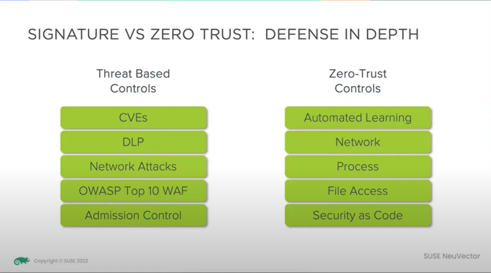
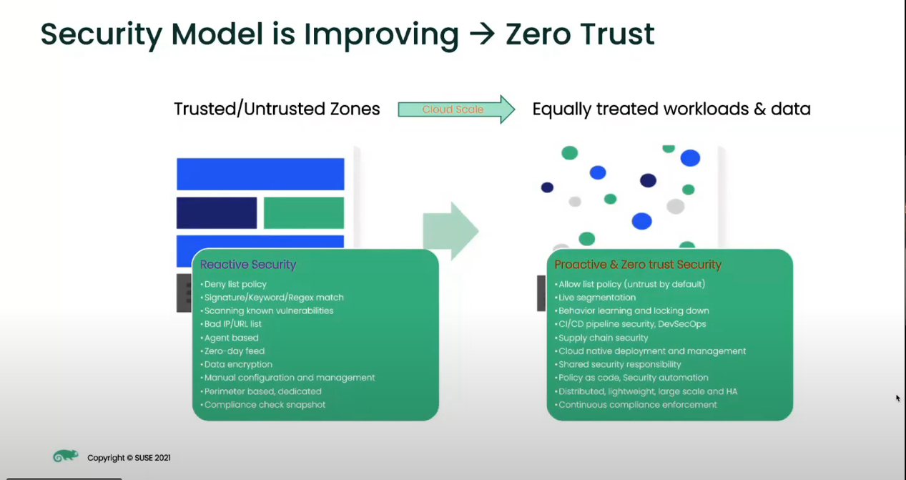
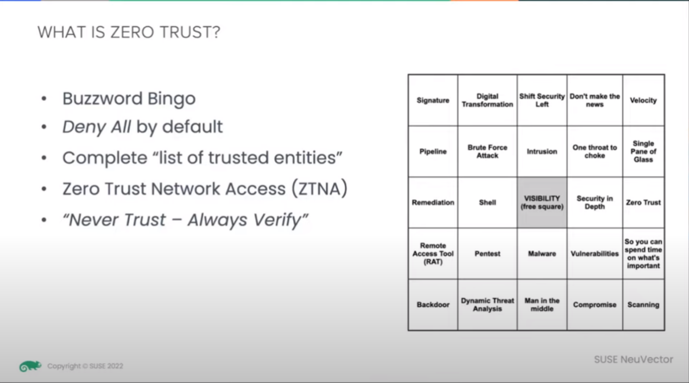
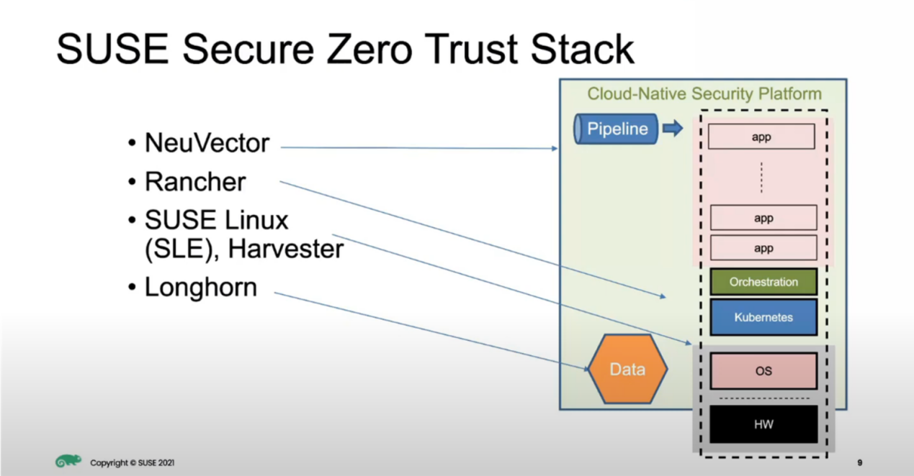
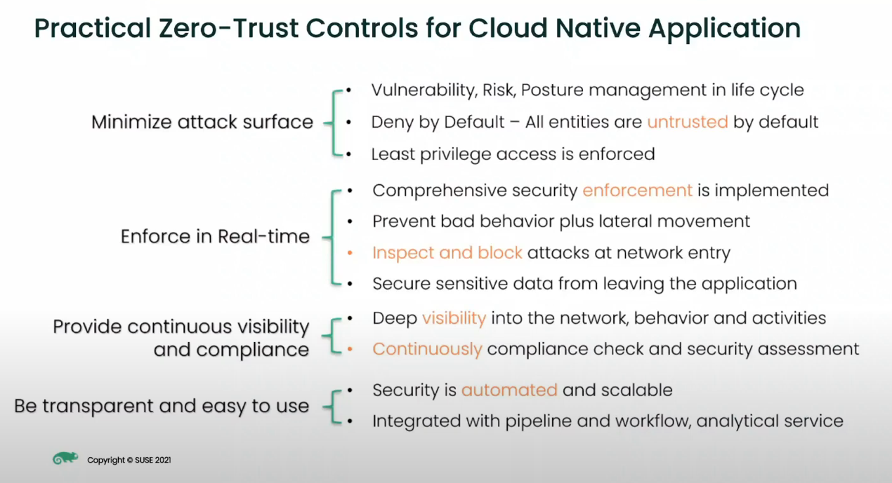
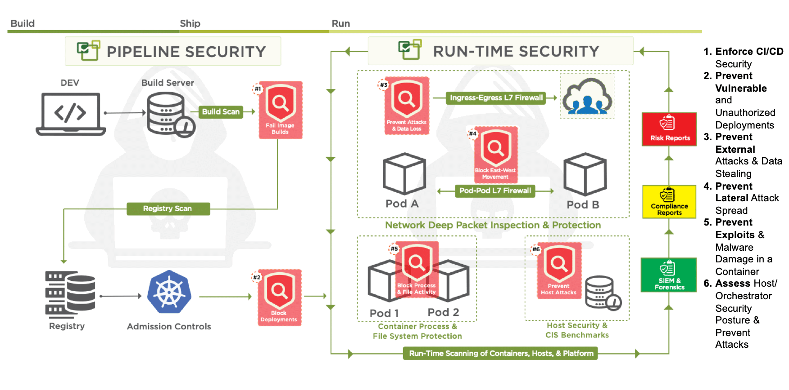
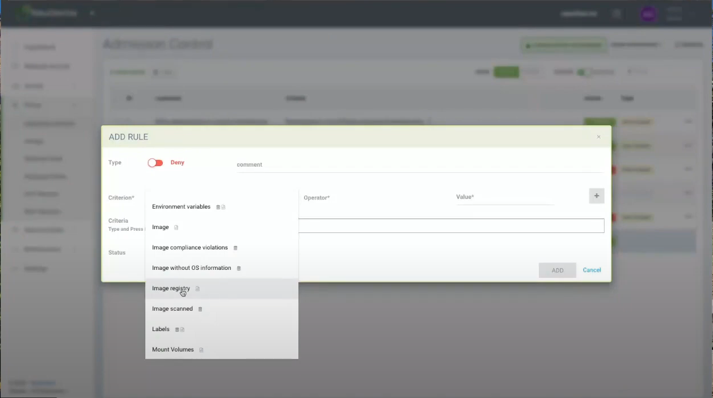
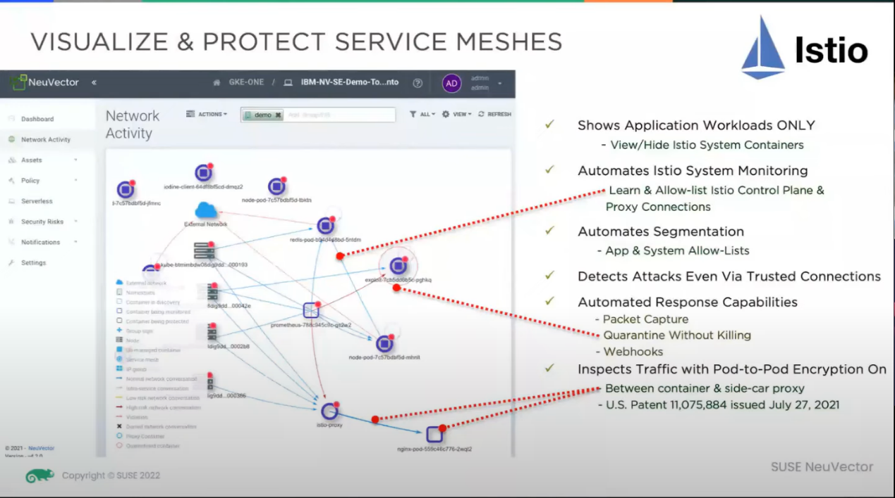
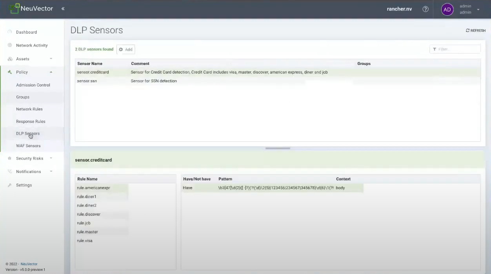

专题 2023RSAC创新沙盒 标签 0day 零信任 K8S 首发于创新研究院官方博客
在2023年RSA大会上，来自SUSE NeuVector的高级安全工程师Tracy Walker为我们分享了一种在K8S环境中阻止0Day攻击的透明(对业务和环境无影响)方法——零信任原则，并且使用开源工具NeuVector进行了演示。本文基于Tracy的零信任观点结合SUSE的整体方案，尝试挖掘出更多的安全新思路。
- 背景介绍
Tracy的分享主要是围绕零信任为何能防御0Day攻击展开，如图1所示，简单来说就是基于CVE等已知扫描检测手段无法发现未知攻击。零信任，默认拒绝所以动作，只有在允许的列表里才会被授权，已知、未知尽在掌握。笔者在这里想要聊一聊Tracy使用的开源工具——NeuVector。

图1 传统控制和零信任控制对比
SUSE相信大家都很熟悉了，是一家全球性的开源软件公司，提供企业级的Linux操作系统和相关的解决方案。而Tracy分享的理念的基础支撑其实是来自NeuVector。接下来请和笔者一起来扒一扒NeuVector的历史。
NeuVector由黄飞（Fei Huang）和段磊（Gary Duan）于2015年在美国加利福尼亚州联合创立。创立之初公司专注于容器安全，具体就是网络监测和容器防火墙。公司创立后发展迅速，于21年被SUSE收购。此举极大地增强了Rancher的安全合规板块，从此NeuVector也正式成为SUSE的一部分，大概也是由此开始 ，NeuVector贴上零信任标签。
- 什么是零信任
传统的网络安全模型通常采用边界防御，即在内部网络和外部网络之间建立防火墙来保护内部资源。然而，随着网络边界的模糊化和攻击技术的不断演进，边界防御已经不足以提供足够的安全性。如图2所示[1]，黄飞在一次网络研讨会中也表明，随着业务云化的不断推进，安全模型也逐步向零信任演进。

图2 安全模型的演进
正如Tracy在一次网络研讨会中所说的那样[2]，零信任（Zero Trust）的核心原则是"永远不信任，始终验证"。它基于一种假设，即无论是内部用户、外部用户还是设备，都不能被默认信任。

图3 Tracy Walker关于零信任的解释
零信任（Zero Trust）是一种安全模型，不是一个具体的产品或技术。它的核心理念是不信任任何设备、用户或应用程序，并将访问控制和安全策略放在应用程序层面。零信任安全模型认为，每个用户和设备都可能成为攻击者，因此必须对它们进行身份验证、授权和访问控制，以保护敏感数据和应用程序。这种基于认证和授权的精细访问控制可以减少攻击者的潜在影响范围，并提供更高的安全性。
因此，零信任安全模型强调了持续的身份验证、访问控制和监控，以确保只有经过验证和授权的用户和设备能够获得访问权限。它不仅仅关注网络边界，而是将安全性扩展到应用程序、数据和用户层面，从而提供更全面的安全保护。
- NeuVector和零信任的关系
NeuVector的产品提供了基于容器的安全解决方案，帮助用户保护他们的容器环境。它包括实时威胁检测、入侵检测和预防、运行时安全策略、自动响应等功能，可以帮助用户识别和防止各种攻击，包括内部和外部攻击、未知攻击和高级威胁等。
NeuVector的产品可以作为实现零信任安全模型的一部分，提供对容器环境的实时安全保护和威胁检测。但是，实现零信任安全模型还需要其他技术的支持，如多因素身份验证、数据加密等。
- 构建零信任云原生安全底座的方案
5.1 SUSE的安全底座组件
NeuVector加入SUSE大家庭后，结合其他产品如SUSE Linux、Harvester和Longhorn等基本可构成一个可信安全环境，笔者将其称为零信任云原生安全底座(简称安全底座)。如图4所示，笔者在NeuVector网络研讨会中也发现他们关于此的介绍，接下来我们来简单了解下该方案的组成以及这些产品在安全底座中的作用：

图4 SUSE零信任环境结构
NeuVector：是一个容器防火墙解决方案，用于保护容器化应用程序的安全。它通过深度数据包检测（DPI）和容器运行时保护，提供容器级别的入侵检测和防御，监控和阻止恶意流量和攻击。NeuVector帮助确保容器环境的安全性，并提供对容器网络流量的可见性和控制。
Rancher：是一个开源的容器管理平台，提供了集群管理、应用程序编排、监控和日志、身份认证和访问控制等功能，帮助用户简单且快速的部署一个可行的安全底座。
SUSE Linux，Harvester：SUSE Linux作为一个企业级Linux操作系统，提供了可靠、安全和可扩展的基础设施，用于构建和部署应用程序。它提供了强大的安全功能和工具，包括访问控制、身份验证、文件加密等，以帮助建立安全的基础架构，为环境提供了 一个减少攻击面的系统镜像；Harvester是一个基于Kubernetes的开源虚拟化平台，为容器化应用程序提供了高性能和简化的虚拟机管理解决方案。它利用Kubernetes的自动化和可伸缩性，提供了可靠的虚拟化基础设施，帮助构建安全的应用环境。
Longhorn：Longhorn是一个开源的分布式块存储系统，为容器化环境提供持久化存储解决方案。它通过提供数据加密、快照和恢复等功能，保护存储在容器中的数据的安全性和可靠性。
将这些组件组合在一起，可以构建一个强大的零信任安全底座。通过NeuVector提供的容器防火墙功能，SUSE Linux提供的安全基础设施，Harvester提供的虚拟化管理和Longhorn提供的数据存储，可以实现对容器化环境的全面安全保护和管理。这种组合可以帮助用户快速建立一个基于零信任原则的安全底座，确保应用程序和数据的安全性和保密性。
5.2 SUSE的零信任实践
如图5所示，通过以上组件的结合，NeuVector针对零信任在云原生环境下的实践控制项做了梳理[3]。接下来笔者将以最小化攻击面为例做一些简要的说明：

图5 云原生应用的实用零信任控制
5.2.1 生命周期中的漏洞、风险、状态管理
笔者理解，如图6所示[4]，这需要在应用程序的整个生命周期中，对漏洞和风险进行管理，确保及时修补和更新，以减少潜在的攻击面。笔者将从以下几个方面简要分析：

图6 NeuVector全生命周期安全图
操作系统和虚拟化：这其实由SUSE的SUSE Linux，Harvester所提供。
代码层：由于官方有关于Sonatype Nexus的集成描述[5]，笔者猜测，NeuVector结合了Sonatype Nexus能够做到CI/CD阶段检测项目中使用的组件是否存在已知的安全漏洞供应链扫描并添加准入规则来保障项目组件的安全性。
镜像层面：NeuVector的自动响应规则结合JFrog Xray镜像扫描能力，NeuVector允许根据JFrog Xray的扫描结果配置自动响应规则。根据镜像中发现的安全漏洞或合规性问题，可以定义特定的规则和操作来保护容器环境。如图7所示，可以设置规则，如果镜像中存在高危漏洞，则自动拒绝该镜像的引用, 将被扫描过的镜像仓库定义为合法仓库，仅允许合法仓库被使用等。

图7 镜像规格准入控制
运行时：将进程和文件系统监控与第7层网络检查结合使用，对网络、数据包、零日攻击和应用攻击（如 DDoS 和 DNS）的唯一实时识别和阻止，可以在不中断正常容器会话的情况下阻止未经授权的容器活动或来自容器的连接，其实也就是透明的意思，对正常环境没有影响。
5.2.2 默认拒绝
所有实体都被默认视为不受信任，需要经过验证和授权才能访问资源和服务，这里其实就是容器防火墙的默认拒绝策略。
5.2.3强制执行最低权限访问
采取最小权限原则，只授予实体所需的最低权限，以减少潜在的风险和攻击面。这里包含三个方面的内容，数据的采集和规则的生成以及应用。
NeuVector表明其使用的是第7层网络检测技术而不是eBPF和Istio技术去做流量采集也不是。没有使用Istio的原因是，Istio无法对已经加密的流量做分析（如HTTPS协议的请求），这很容易获取不到明文或者给攻击者留下伪装的途径，而Istio Egress Gateway则需要额外添加网络策略确保所有出口流量都流经网关，这将增加配置的复杂性。关于为何没有使用eBPF，笔者没有在官方资料中找到明确的原因，只在网络研讨会议中看到他们认为在网络侧做流量分析能够获取的更加全面，笔者猜想还有另外一个原因是eBPF对系统版本是有强制要求的，这意味着旧版本的系统环境将无法使用这一技术，这将非常不友好。基于第7层深度数据包检测的技术其实也就是DPI（Deep Packet Inspection）可以识别多种应用层协议，关于加密协议的流量识别，在官方介绍里简要说明是通过对允许的NDS的跟踪，联系上下文信息间接解析流量内容[6]。由此基于DPI技术NeuVector可以做到如图8所示的包含Istio等所有流量的解析和追踪。

图8 NeuVector对Istio流量的可视化
通过对详细流量的解析，NeuVector很容易获取环境的行为原始信息，原始信息匹配如图9所示的各类规则可以生成对应类型的安全事件。

图9 策略规格
原始信息结合开放策略代理（OPA）生成CRD策略（这就是NeuVector宣称的安全即代码），并应用到环境中使策略生效[7]。
- 总结
在关注这次RSA议题之前，笔者也和相关同事讨论过零信任云安全底座的事情。当时笔者倾向于在内核级别去做云场景下的零信任，笔者期望在内核层之上不做过多关注，只从最底层处去做限制。对Tracy的这次分享的背后挖掘也拓宽了笔者的视野。针对NeuVector的零信任云原生安全底座解决方案，笔者有以下两点疑虑：
第一，当企业决定将 NeuVector真正运用在实际环境中时候，如何判断哪些策略该被允许将是一个让人头疼的问题。尽管他们宣称环境拥有一定的一致性，因此可以导出规则到其他环境，但针对云场景下数以万计的微服务，谁来做合法性的判断，谁又能做这将是个未知数。虽然Tracy宣称他们没使用机器学习技术，但笔者感觉使用机器学习自动判断服务的哪些动作是合法的，从而自动给出策略建议也许是一个不错的方案。
第二，假如攻击者已经早于NeuVector对环境做了控制，例如攻击者已经掌握集群的部分CRD资源管理权限，又或者攻击者做到了内核级别的劫持，那NeuVector基于CRD发出的所有控制策略将形同虚设。基于此，笔者还是保留基于内核层做控制的建议。
由于篇幅有限，非常遗憾没有针对NeuVector的底层原理进行说明，如有兴趣的朋友可以关注官方渠道进行交流。
参考文献
[1] SUSE.Zero-Trust Security for Kubernetes and Container Workloads
[2] SUSE.Zero Effort Zero Trust for Blocking Zero Days in Kubernetes
[3] https://neuvector.com/about/events/
[4] https://neuvector.com/wp-content/uploads/2020/08/NeuVectorPipeline.png
[5] https://neuvector.com/products/integrations/
[6] Neuvector. How to Enforce Egress Container Security Policies in Kubernetes, OpenShift, and Istio
[7] Neuvector. Use Cloud-Native Tools OPA and CRD to Protect Applications from Pipeline to Production